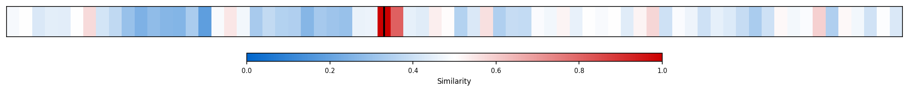
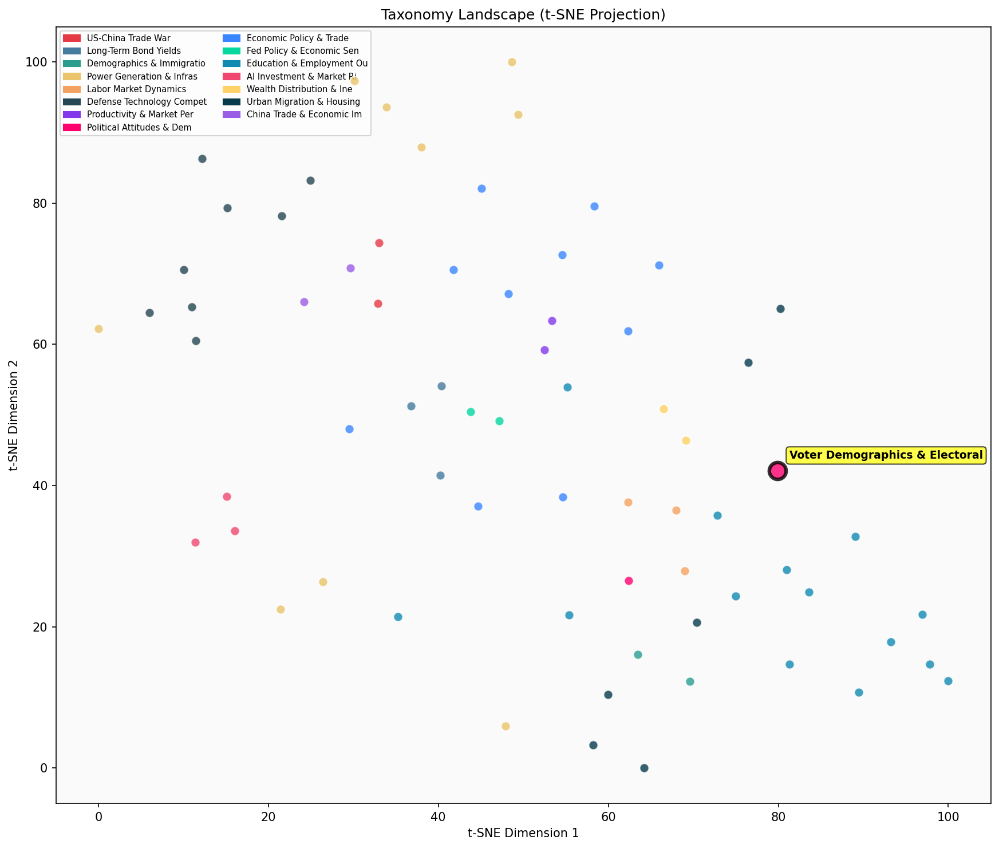

Description
This subcluster analyzes shifting voter demographics and electoral patterns through quantitative data and polling analysis. Articles examine demographic breakdowns by age, race, geography, and socioeconomic status, tracking how different voter groups' preferences evolve across election cycles. Common sources include voter registration data, exit polls, census information, and electoral analyses from outlets like New York Times and political observers. The focus spans local NYC politics to national presidential trends, documenting phenomena like residential political segregation, new voter registration patterns, and demographic coalition changes. Unlike broader political attitude research, this subcluster specifically emphasizes measurable electoral shifts and demographic voting patterns rather than ideological or policy preference analysis.
Similarity to All 70 Subclusters
Each cell represents a subcluster. Color intensity shows similarity (blue=low, red=high). Black line marks current subcluster position.
Relationship to Primary Clusters
Average similarity to each of the 15 primary clusters. Larger area = stronger relationship to that cluster.
Taxonomy Landscape
All 70 subclusters positioned by similarity (t-SNE). Current subcluster highlighted with label. Click to enlarge.
Network Connections
Current subcluster at center, connected to related subclusters. Line thickness = similarity strength.
Most Representative Articles
-
1. Trump's edge in the electoral college is fading as polling shows Trump’s improved margins with non-w
-
2. New polling suggests Trump and Biden are tied with 18-29-year-olds and Hispanic voters, relative to
-
3. Exit poll analysis by Catalist and Edison Research finds 18-19pp shifts toward Trump vs. 2020 among
-
4. A NYT analysis finds that Trump won 2.5mm more votes than in 2020 and Harris won 7mm fewer votes tha
-
5. Biden now leads Trump by 10 points among white voters, a 15-point improvement from 2016.
Edge Cases (Boundary Articles)
-
1. 33 of 37 OECD countries require photo IDs to vote, contrasting with U.S. debates on voter ID laws. EThis article is borderline because it focuses on international voting policy comparisons (voter ID requirements across OECD countries) rather than analyzing demographic voting patterns or electoral shifts within any specific electorate. While voter ID laws can affect different demographic groups differently, the article's emphasis is on cross-national policy differences rather than the demographic and electoral trend analysis that defines the cluster.
-
2. Since President Trump's inauguration, job growth in industrial America has been influenced by severaThis article is borderline because while it mentions economic factors affecting industrial America (a key voter demographic), it focuses primarily on trade and manufacturing economics rather than analyzing actual voter behavior, electoral patterns, or demographic shifts. The content aligns much better with trade and economic policy discussions than with voter demographics and polling analysis.
-
3. Democrats lie about Trump’s attacks on USPS.This article is borderline because while it mentions Democrats and Trump (political actors relevant to electoral dynamics), it focuses on accusations about postal service attacks rather than analyzing actual voter demographic data, polling trends, or electoral pattern shifts that define this cluster. The content appears more aligned with political messaging and postal service policy debates than the quantitative demographic analysis that characterizes this subcluster.
Original Dendrogram